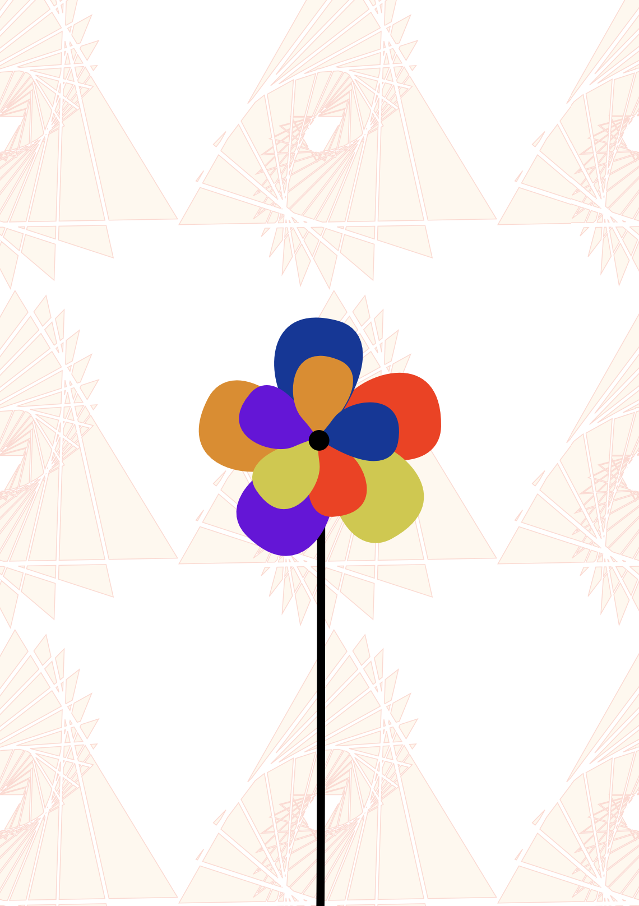

Prva vježba:U prvoj vježbi zadatak je bio izraditi svoj font u programu FontForge.
Ovaj zadatak mi je omogućio da se upoznam s osnovama tipografije i dizajna fontova.
Druga vježba: U drugoj vježbi zadatak je bio napisati inicijale koristeći svoj font.
Ovim zadatkom krenuli smo učiti o vektorskoj grafici i njenoj primjeni u dizajnu.
Treća vježba: U trećoj vježbi zadatak je bio ilustraciju koristeći neku sliku kao šablonu te iskoristiti uzorak kao pozadinu.
U ovom zadatku naučila sam koristiti alate za ilustraciju i stvaranje uzoraka.

Četvrta vježba: U četvrtoj vježbi nastavili smo učiti naredbe u vektorskim programima.
Ovim zadatkom zaključali smo gradivo o vektorskoj grafici.
1. PROJEKTNI ZADATAK: Zadatak iz vektorske grafike u kojem svmo koristili sve dosd naučene alate i tehnike.
Ovaj projekt je bio prilika da primijenim sve što sam naučila u prethodnim vježbama i stvorim složeniju ilustraciju.
Peta vježba: U petoj vježbi krenuli smo učiti o piksel grafici.
Ovo je prvi zadatak iz ove cijeline u kojem sam naučila osonovne korekcije na fotografiji.

Šesta vježba: U šestoj vježbi nastavili smo učiti o piksel grafici.
Ovaj zadatak je bio fokusiran na promjenu boje fotografije.
Sedma vježba: U sedmoj vježbi nastavili smo učiti o piksel grafici.
Ovaj zadatak je bio fokusiran na realistično dodavanje elemenata na postojeću fotografiju.
Naučila sam kako izrezivati fotografije, dodavati sjene na elemente i prilagođavati ih postojećoj fotografiji.

2. PROJEKTNI ZADATAK: Zadatak iz piksel grafike u kojem smo koristili sve dosad naučene alate i tehnike.
Ovaj projekt je bio prilika da primijenim sve što sam naučila u prethodnim vježbama i stvorim novu fotografiju.
Ovaj projekt bio mi je posebno drag i zanimljiv te sam mu posvetila puno vremena i truda.

Osma vježba: Sa osmom vježbom ušli smo u svijet fotomontaže.
Zadatak je bio fokusiran na izradu GIF-a od postojećeg videozapisa.
Ovaj zadatak mi je omogućio da se upoznam s osnovama animacije i stvaranja GIF-ova.
Deveta vježba: U devetoj vježbi prvoga puta spajati više videouradaka.
Zadatak je bio fokusiran na stvaranje kratkog videa od više snimaka.
Ovaj zadatak mi je omogućio da se upoznam s osnovama montaže i uređivanja videa.